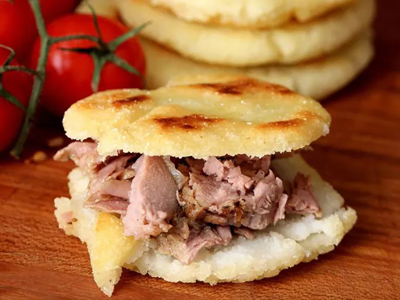

Arepa

Description
Arepas are a staple in Colombian and Venezuelan cuisine, consisting of
flat, round patties made from ground maize dough, often served with a
variety of fillings and toppings. They are enjoyed as a breakfast, lunch,
dinner, or snack, and can be adapted to different tastes and preferences.
Ingredients
- 2 ½ cups lukewarm water.
- 1 teaspoon salt.
- 2 cups pre-cooked white cornmeal (such as P.A.N.®).
- ¼ cup vegetable oil, or as needed.
Steps
-
Stir water and salt together in a medium bowl; gradually stir in
cornmeal with your fingers until the mixture forms a soft, moist,
malleable dough.
-
Form dough into eight 2-inch diameter balls; pat each ball to flatten
into a 3/8-inch-thick arepa patty.
-
Form dough into eight 2-inch diameter balls; pat each ball to flatten
into a 3/8-inch-thick arepa patty.
-
Slice halfway through each arepa horizontally with a thin serrated knife
to form a pita-like pocket.
- Enjoy!
Home